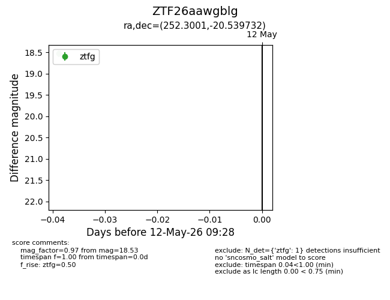
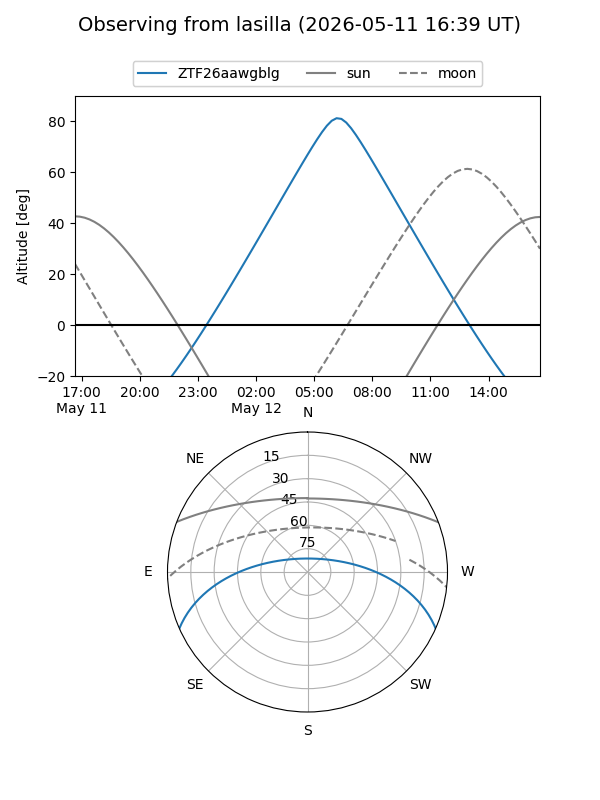
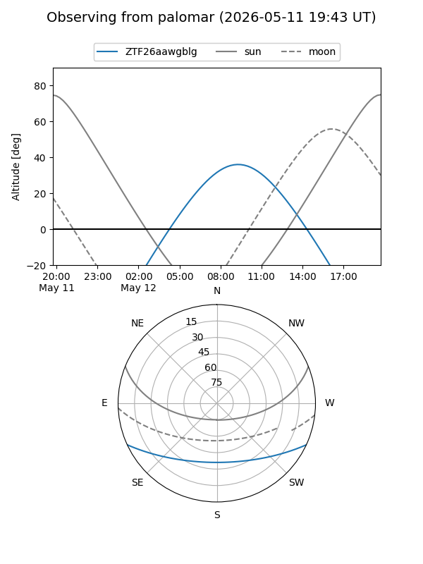

ZTF26aawgblg
Target ZTF26aawgblg at 2026-05-12 09:30
Aliases and brokers:
FINK: link
Lasair: link
ALeRCE: link
alt names
ZTF26aawgblg (ztf,fink_ztf)
Coordinates:
equatorial (ra, dec) = 252.3001,-20.53973
equatorial (HMS+DMS) = 16:49:12.03,-20:32:23.03
galactic (l, b) = (359.6480,+15.29248)
Flags:
Photometry:
last ztfg=18.53
1 ztfg detections
Lightcurve

Visibility


Additional plots